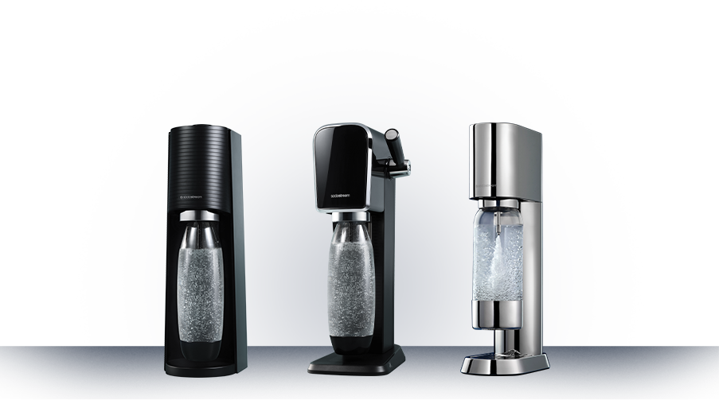

harmonia formy i funkcjonalności
Butelka Ensō, 1l
Odkryj harmonię stylu i funkcjonalności w ekskluzywnej butelce SodaStream Ensō. Jej wyrafinowany design i niezwykła trwałość sprawią, że Twoje domowe napoje nabiorą wyjątkowego charakteru.
Wyjątkowy design
Butelka SodaStream Ensō wykonana jest z Tritanu i ozdobiona eleganckimi detalami ze stali nierdzewnej, co podkreśla jej minimalistyczny i ponadczasowy charakter. Dzięki odporności na matowienie i uszkodzenia zachowuje estetyczny wygląd nawet przy intensywnym użytkowaniu, stając się stylowym dodatkiem Twojej kuchni przez długie lata.
Trwałość i higiena
Odłączana podstawa ułatwia utrzymanie czystości
Butelka Ensō została zaprojektowana z myślą o wyglądzie. Jest wolna od BPA i przystosowana do mycia w zmywarce. Odłaczana podstawa ze stali nierdzewnej pozwala na łatwe, szybkie i pozbawione zbędnego wysiłki utrzymanie czystości.
Kompatybilność
Wielorazowa butelka Ensō jest kompatybilna z saturatorami SodaStream Ensō, Art i Terra. To universalne rozwiązanie, które pozwala cieszyć się gazowaną wodą zawsze wtedy, gdy masz na to ochotę.
Sztuka domowego gazowania wody
Zamień jednorazowe butelki na eleganckie i komfortowe rozwiązanie. Butelka SodaStream Ensō pozwala cieszyć się świeżą wodą gazowaną, przygotowaną dokładnie tak jak lubisz, w stylowej oprawie.
Napełnij butelkę zimną wodą i nagazuj ją tak, jak lubisz. Wybierz mocny, średni lub lekki gaz.
Dodaj swój ulubiony syrop lub inne dodatki i stwórz napój, który idealnie pasuje do Twojego nastroju.
Rozkoszuj się smakiem świeżości - eleganckim, domowym napojem gazowanym, który towarzyszy Ci wtedy, gdy tego potrzebujesz.
Napełnij butelkę zimną wodą i nagazuj ją tak, jak lubisz. Wybierz mocny, średni lub lekki gaz.
Dodaj swój ulubiony syrop lub inne dodatki i stwórz napój, który idealnie pasuje do Twojego nastroju.
Rozkoszuj się smakiem świeżości - eleganckim, domowym napojem gazowanym, który towarzyszy Ci wtedy, gdy tego potrzebujesz.
Twój styl. Twój smak. Twój rytuał.
Jeśli sięgasz po kultowe klasyki
Pepsi, Mirinda, Liton Ice Tea Lemon, 7UP - ciesz się znanymi smakami w domowym wydaniu, zawsze wtedy, gsy masz na nie ochotę.
Jeśli szukasz ponadczasowej prostoty
Cola, Tonic lub Xtreme Energy - to sprawdzone smaki, które nigdy nie wychodzą z mody i pasują do każdej okazji.
Jeśli cenisz owocową świeżość
Malina, Mango, Marakuja, Owoce Leśne... Wybieraj spośród owocowych syropów SodaStream i komponuj napoje, które dopełnią Twój dzień.
Jeśli lubisz zaskakiwać
SodaStream Crafted to linia nieoczywistych połączeń - jak brzoskwinia z imbirem czy ananas z jalapeño. Idealne na wieczór, spotkanie czy chwilę tylko dla siebie.

Jeśli sięgasz po kultowe klasyki
Pepsi, Mirinda, Liton Ice Tea Lemon, 7UP - ciesz się znanymi smakami w domowym wydaniu, zawsze wtedy, gsy masz na nie ochotę.
Jeśli szukasz ponadczasowej prostoty
Cola, Tonic lub Xtreme Energy - to sprawdzone smaki, które nigdy nie wychodzą z mody i pasują do każdej okazji.
Jeśli cenisz owocową świeżość
Malina, Mango, Marakuja, Owoce Leśne... Wybieraj spośród owocowych syropów SodaStream i komponuj napoje, które dopełnią Twój dzień.
Jeśli lubisz zaskakiwać
SodaStream Crafted to linia nieoczywistych połączeń - jak brzoskwinia z imbirem czy ananas z jalapeño. Idealne na wieczór, spotkanie czy chwilę tylko dla siebie.